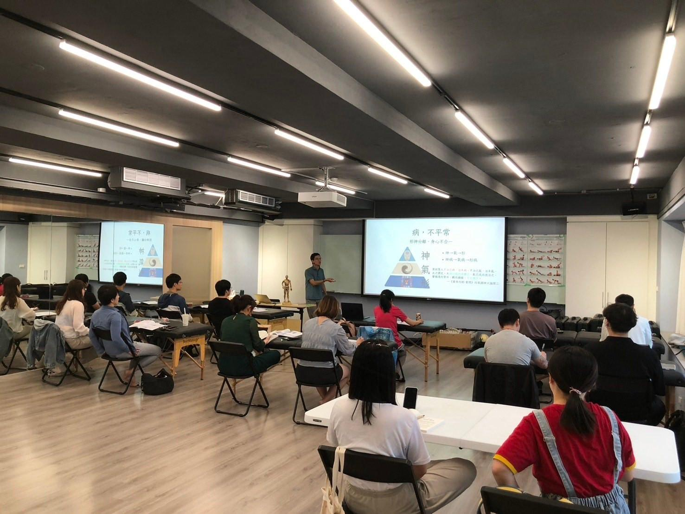
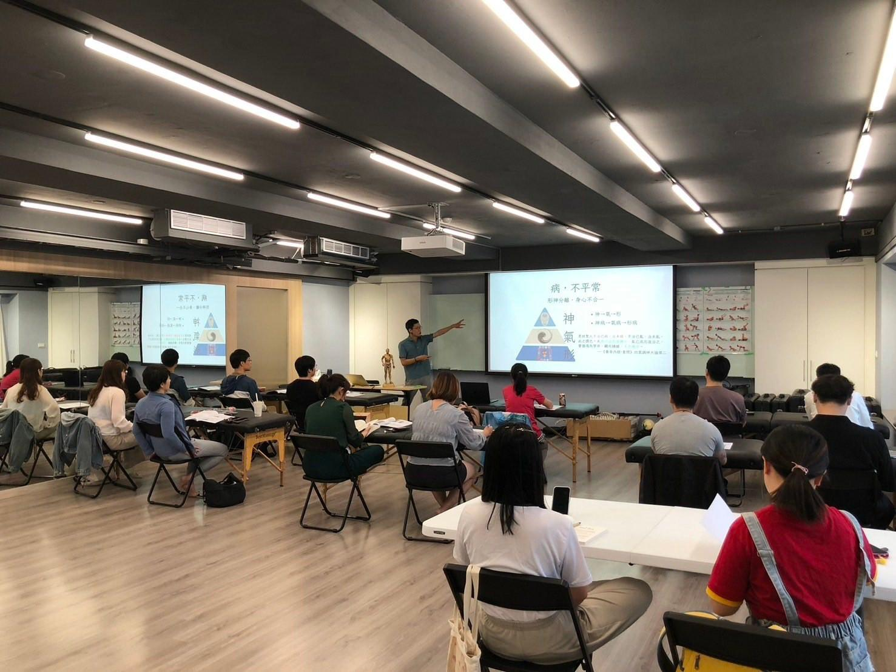
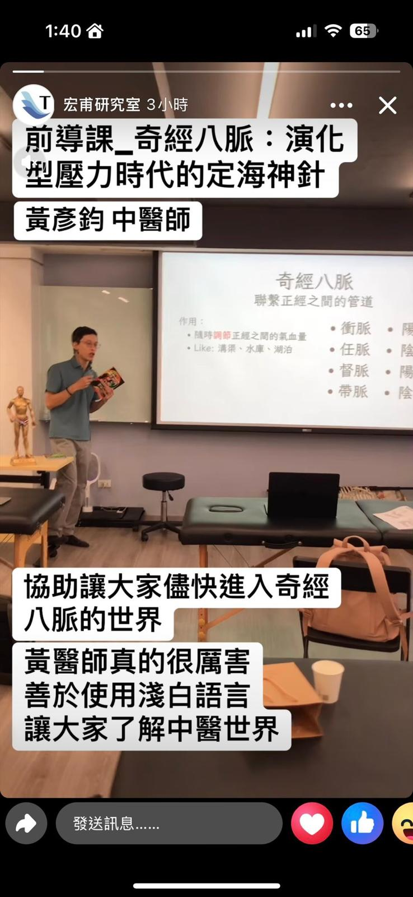
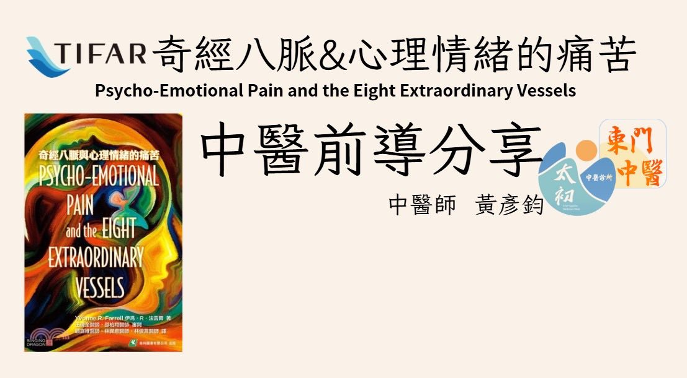

母親節，祝全天下的母親Happy Mother’s Day!!
母親節，祝全天下的母親Happy Mother’s Day!!
下次選時間要再仔細一點，當初完全沒注意到5/11是母親節！
非常感謝來參與的牙醫師、物理治療師、運動按摩師，今天母親節又是個下雨天，還有特別從台中跑上來台北的，實在是受寵若驚！
好加在，今天大家都很給面子，給予我熱情的回饋，也很高興能讓非中醫專業的人聽懂中醫專業的醫療內容，也帶著大家練習取穴、觸摸「穴道空間」的觸感，希望在場的各位都能透過這場交流對中醫有專業的認識並且有所收穫！
再次感謝蕭老師與師Sophia Su，讓我有這個機會在宏甫的教育平台分享交流中醫專業，這次的經歷是非常難得而且特別！ 認識了許多厲害的物理治療師與中醫師，能讓台下學員能聽得懂中醫而且能找到穴位空間，就是我最大的成就感☺️☺️☺️
真的是非常特別的一天！
再次祝福各位母親，母親節快樂🥰🥰🥰
#TIFAR宏甫X中醫奇經八脈
太初中醫診所 東門中醫
中醫師 黃彥鈞



